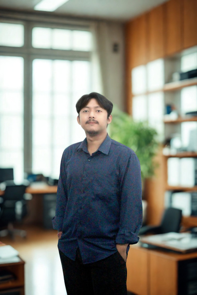
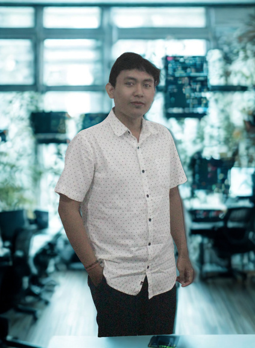

Accounting
Transaction data, financial statements, transaction verification, financial analysis, performance reporting and financial control.
DENPASAR · BALI
Accounting, tax, legal and business consulting for companies that want practical guidance, stronger systems and sustainable growth.
ExploreW.S.P Consulting is a professional services company based in Denpasar. Our team specializes in outsourcing accounting, bookkeeping and legal services, with expertise spanning corporate confidentiality, company formation, audits, tax compliance and planning, payroll management and financial consulting.
Our goal is to become a trusted long-term business partner by combining professional expertise, competitive value and personalized service for clients of different scales.
Start a conversation ↗Integrated professional services designed to help organizations operate with greater clarity, compliance and control.
Transaction data, financial statements, transaction verification, financial analysis, performance reporting and financial control.
Tax returns, audit assistance, dispute resolution, administration, advice, planning, review, advisory, transfer pricing and international taxation.
Company deeds and establishment, licensing, dissolution, building permits, legal audit, legal review, drafting and problem solving.
Management report analysis, performance management strategy, SOP development, HR training, evaluations and business plan preparation.
General, internal, investigative, financial due diligence, HR, AUP, interim and compliance audits, plus property and business assessment.
Clients choose the services they need. We analyze the requirements, provide the necessary data framework and maintain a minimum of three meetings as part of the working process.
Select the consulting services that match your business needs.
We review the situation and determine the information required to carry out the work.
After agreement, the service contract defines the work and costs in two languages.
Clients provide the required data while confidentiality is bound to the cooperation agreement.
Accounting, audit, tax, technology and creative expertise working together across client needs.
Co Founder · Accounting Specialist · Senior Auditor · Tax Specialist

Financial Professional · Senior Auditor
Accounting Specialist · Junior Auditor

Co Founder · IT Specialist · Graphic Design Specialist
06 — COMPANY VALUES
High standards, professional education and advice intended to help clients make informed financial decisions.
Responsive and accurate service for individuals, micro, medium and large businesses.
Combining the skills, experience and energy of the team so each client receives professional attention.
07 — LET'S WORK TOGETHER
With the right cooperation and expert support, W.S.P Consulting helps clients improve efficiency and productivity.
wsp.consulting10@gmail.com ↗